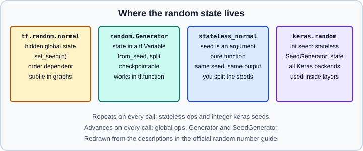

Tensors, Dtypes & Random Numbers
|
This content was generated with the assistance of AI and should be verified against the official documentation before being relied on in production. |
A tf.Tensor is an immutable, multidimensional array with a single dtype and a shape. Tensors are the values that flow through every TensorFlow operation: inputs, labels, activations and gradients are tensors, while trainable state lives in variables. This page covers creation, shape and dtype attributes, casting and promotion, and the several random-number APIs, including how to make them reproducible. Tensors with irregular or mostly empty contents are on Ragged & Sparse Tensors, NumPy exchange is on NumPy Interop, and tracing of random ops inside functions is on Graphs and tf.function.
It targets Python 3.13, TensorFlow 2.21 with Keras 3.15 (TensorFlow 2.22 is upcoming and not covered), and was checked against the official documentation on 2026-10-30. Examples were run on Python 3.13 with TensorFlow 2.21 and Keras 3.15 (CPU) on 2026-10-31. For the equivalent PyTorch ideas see PyTorch tensors, for the linear-algebra background Math for ML, and for NumPy see array creation and data types.
Creating tensors
import tensorflow as tf
# From Python data: dtype inferred (int32, float32, bool, string)
a = tf.constant([[1, 2, 3], [4, 5, 6]]) # int32
b = tf.constant([1.0, 2.5]) # float32
c = tf.constant([True, False]) # bool
s = tf.constant(["a", "bc"]) # string
# Explicit dtype and shape
d = tf.constant(1.5, dtype=tf.float64)
e = tf.constant(0, shape=(2, 2)) # scalar broadcast to the shape
# Factories
z = tf.zeros((2, 3))
o = tf.ones((2, 3), dtype=tf.int64)
f = tf.fill((2, 2), 7.0)
r = tf.range(0, 10, 2) # [0 2 4 6 8], int32
l = tf.linspace(0.0, 1.0, num=5) # includes both endpoints
i = tf.eye(3)
zl = tf.zeros_like(b) # same shape and dtype as b
# Conversion from NumPy and back
import numpy as np
t = tf.convert_to_tensor(np.arange(6).reshape(2, 3)) # int64 stays int64
print(t.numpy()) # NumPy copy or view of the data
print(a.shape, a.dtype) # (2, 3) <dtype: 'int32'>Guidance and pitfalls:
-
Tensors are immutable. There is no item assignment on a
tf.Tensor; to write into positions usetf.tensor_scatter_nd_update, build a new tensor, or keep the data in atf.Variable(see the next page). -
Python integers become
int32and Python floats becomefloat32, whereas NumPy defaults toint64andfloat64.tf.constant(np.float64(1.0))keepsfloat64, so mixing NumPy defaults with TensorFlow defaults is a frequent source of dtype errors. -
tf.constantembeds the value in the graph as a constant when traced; for large data prefertf.convert_to_tensor, atf.datapipeline or a variable, and never put big arrays into a traced function as literals. -
tf.rangeandtf.linspacefollow the same floating-point length caveat asnumpy.arange; uselinspacewhen you need an exact number of points. -
.numpy()only exists on eager tensors. Insidetf.functionor a Keras layercallrunning in graph mode you hold a symbolic tensor and calling.numpy()raises an error.
Attributes
x = tf.random.normal((2, 3, 4))
x.shape # TensorShape([2, 3, 4])
x.ndim # 3
x.dtype # tf.float32
tf.rank(x) # scalar tensor 3
tf.size(x) # scalar tensor 24
tf.shape(x) # tensor [2 3 4], usable inside graphs
x.device # e.g. '/job:localhost/replica:0/task:0/device:CPU:0'
# Static versus dynamic shape
@tf.function(input_signature=[tf.TensorSpec([None, 4], tf.float32)])
def f(v):
print("static :", v.shape) # (None, 4) at trace time
return tf.shape(v)[0] # dynamic batch size, evaluated at run time
f(tf.zeros((5, 4)))A shape is a tf.TensorShape. Its entries may be None when a dimension is unknown at trace time, for example the batch size. Use x.shape for the static information and tf.shape(x) when you need the actual runtime value inside a graph. Reshaping uses tf.reshape(x, [2, -1]), where one dimension may be -1 and is inferred; tf.transpose, tf.expand_dims, tf.squeeze, tf.concat and tf.stack cover the usual rearrangements. Indexing follows NumPy basic slicing (x[:, 1:, ::2], x[..., 0]) with tf.newaxis; gathering with index tensors uses tf.gather, tf.gather_nd and tf.boolean_mask.
Dtypes
| dtype | Notes |
|---|---|
|
default floating dtype of Python floats and most random ops |
|
double and half precision |
|
8 exponent bits and 7 mantissa bits: float32 range with lower precision; the usual reduced-precision dtype on TPUs and recent GPUs |
|
complex numbers |
|
signed integers; |
|
unsigned integers; |
|
boolean |
|
variable-length byte strings, supported by tf.data and text ops but not by arithmetic |
|
quantized types used by legacy quantization ops |
|
internal handles for variables and composite values such as datasets or tensor lists |
Newer low-precision dtypes (for example float8 variants) are exposed through Keras mixed-precision and quantization features rather than as everyday TensorFlow Core dtypes; check the tf.dtypes listing for your installed version before depending on them. Which dtype to train in is discussed on Mixed Precision and Hardware, Memory and Mixed Precision.
Casting and promotion
x = tf.constant([1.7, -2.3, 3.9])
tf.cast(x, tf.int32) # [ 1 -2 3 ]: truncation toward zero
tf.cast(x, tf.bfloat16) # rounds to 8 significant bits
tf.cast(tf.constant([0, 3]), tf.bool) # [False True]
i = tf.constant([1, 2, 3]) # int32
f = tf.constant([0.5, 0.5, 0.5]) # float32
try:
i + f # no implicit int to float conversion
except (tf.errors.InvalidArgumentError, TypeError) as err:
print(type(err).__name__) # InvalidArgumentError
print((i + 1).dtype) # int32: Python scalar adopts the tensor dtype
print((tf.cast(i, tf.float32) + f).dtype) # float32
print((i / 2).dtype) # float64: truediv on integers returns floats
print((i // 2).dtype) # int32Source: https://www.tensorflow.org/guide/tensor and https://www.tensorflow.org/guide/tf_numpy_type_promotion
By default TensorFlow does not promote dtypes between two tensors: operands of an op must match, and mismatches raise an error, so you cast explicitly with tf.cast. Python scalars are converted to the dtype of the tensor they are combined with. The one exception is operators on integer tensors that must produce a floating result (true division), which return a floating dtype. NumPy-style promotion is available as an opt-in through tf.experimental.numpy.experimental_enable_numpy_behavior(dtype_conversion_mode=...) and is described on NumPy Interop; compare also NumPy type promotion. Casting a float to an integer truncates and out-of-range values are implementation defined, so clamp with tf.clip_by_value first.
Further pitfalls:
-
tf.cast(x, tf.float16)can overflow to infinity above about 65504; bfloat16 avoids that at the price of precision. -
Boolean masks must be
tf.bool; comparison ops (tf.equal,x > 0) already return booleans. -
Labels for sparse categorical losses are integers (
int32orint64), not floats; see Losses. -
Compare floats with
tf.experimental.numpy.allcloseortf.debugging.assert_near, not==.
Random numbers
TensorFlow has several random APIs with different state semantics. They are summarized in the figure and detailed below.

Global seed and the classic ops
tf.random.normal, tf.random.uniform, tf.random.shuffle and friends are the stateful ops. tf.random.set_seed(n) sets the global seed; ops that also receive an seed= argument combine both. Behaviour differs between eager execution and graphs: eagerly, a global seed makes the whole program reproducible by call order, but in graph mode each op creates its own state at trace time and repeated calls of a traced function continue the sequence. The official guide recommends the newer APIs below for anything that must be reproducible, because the semantics of the classic seed arguments are subtle.
tf.random.set_seed(1234)
print(tf.random.uniform([1]).numpy()) # first value
print(tf.random.uniform([1]).numpy()) # second value, different
tf.random.set_seed(1234)
print(tf.random.uniform([1]).numpy()) # repeats the first value after resettingtf.random.Generator
A Generator is an object that owns a tf.Variable holding its state, so it behaves well inside tf.function and can be checkpointed. The default algorithm is Philox on all devices.
g = tf.random.Generator.from_seed(1) # deterministic
print(g.normal([2, 2]))
print(g.uniform([3], minval=0, maxval=10))
print(g.state) # int64 vector, advances with each call
g.reset_from_seed(1) # same object, back to the start
print(g.normal([2, 2])) # repeats the first draw
h = tf.random.Generator.from_non_deterministic_state() # seeded from OS entropy
# Independent child streams, for example one per worker or per layer
children = g.split(3)
print([c.uniform([1]).numpy() for c in children])
# The process-wide default generator
tf.random.get_global_generator().normal([1])
tf.random.get_global_generator().reset_from_seed(42) # preferred to replacing itRules of thumb from the guide:
-
Create generators outside the traced function, or create them on the first call only. Passing different generator objects as arguments triggers retracing, as with variables.
-
Do not replace the global generator with
tf.random.set_global_generatorafter functions have captured it; callreset_from_seedon the existing object. -
Under
tf.distribute, a generator created inside the strategy scope gives every replica its own independent stream, and a seeded one stays deterministic overall. A generator created outside the scope is shared and its access is serialized, which can be slow. Do not pass generators as arguments toStrategy.run. See Distributed Training. -
Checkpoint a generator with
tf.train.Checkpoint; with several replicas only the first replica state is saved, so restore into a generator created in the target strategy. See Checkpoints.
Stateless ops
Stateless ops take the seed as an argument and are pure functions: the same seed always yields the same result on the same device, which makes them safe inside functions, tf.data map functions and XLA.
seed = tf.constant([1, 2], dtype=tf.int32) # integer tensor of shape [2]
print(tf.random.stateless_normal([2, 3], seed=seed))
print(tf.random.stateless_normal([2, 3], seed=seed)) # identical
print(tf.random.stateless_uniform([2], seed=[7, 9], minval=0, maxval=1))
# Derive fresh seeds from a parent seed instead of reusing it
new_seeds = tf.random.experimental.stateless_split(seed, num=3) # shape [3, 2]
a = tf.random.stateless_normal([4], seed=new_seeds[0])
b = tf.random.stateless_normal([4], seed=new_seeds[1])The guide notes that stateless results are device dependent, so the same seed can produce different numbers on CPU and GPU, and that you must advance or split the seed yourself, otherwise every call returns the same numbers. This is the right tool for per-example augmentation in a tf.data pipeline, where a counter or Dataset.enumerate() index is combined with a base seed; see tf.data.
keras.random and SeedGenerator
Keras 3 has its own backend-independent random module, keras.random, so the same code runs on TensorFlow, JAX and PyTorch backends (see Keras Multi-Backend). Its ops (normal, uniform, randint, truncated_normal, categorical, shuffle, dropout, beta, gamma, binomial) take a seed argument that is an integer or a keras.random.SeedGenerator.
import keras
x1 = keras.random.normal((2, 2), seed=1337)
x2 = keras.random.normal((2, 2), seed=1337) # identical to x1: an int seed is stateless
gen = keras.random.SeedGenerator(1337) # keeps a state variable
y1 = keras.random.normal((2, 2), seed=gen)
y2 = keras.random.normal((2, 2), seed=gen) # different from y1: the state advances
keras.utils.set_random_seed(42) # seeds Python, NumPy and the active backendAn integer seed behaves like a stateless seed, which is why a layer that wants different noise at each step (dropout, augmentation) keeps a SeedGenerator internally; the state is a Keras variable and therefore works under compilation on every backend. keras.utils.set_random_seed is the one-line seeding call for experiments, but full run-to-run determinism on GPUs also needs deterministic kernels, covered next.
Reproducibility checklist
import os, random
import numpy as np
import tensorflow as tf
os.environ["PYTHONHASHSEED"] = "0" # set before the interpreter starts to be effective
random.seed(0)
np.random.seed(0)
tf.random.set_seed(0) # or keras.utils.set_random_seed(0) which does all three
tf.config.experimental.enable_op_determinism() # deterministic kernels, may be slower or raiseSeeds fix the numbers drawn, while op determinism fixes how GPU kernels reduce and scatter values; both are needed for bitwise-repeatable training. Some ops have no deterministic implementation and raise an error when determinism is enabled. Data-loading order must also be seeded (shuffle(..., seed=...), with reshuffle_each_iteration in mind) and parallel tf.data options can reorder elements unless deterministic=True. The PyTorch counterpart is on Reproducibility and the NumPy generators on NumPy random generators.
Common mistakes
-
Mixing
int32andfloat32orfloat32andfloat64in one expression and getting a dtype error; cast explicitly. -
Calling
.numpy()inside a traced function. -
Reusing the same stateless seed in a loop and wondering why every draw is identical.
-
Creating a new
tf.random.Generatorinside a function on every call, which fails or retraces. -
Expecting
set_seedalone to make GPU training bitwise reproducible. -
Following older tutorials that call
tf.random_normalortf.set_random_seed(TensorFlow 1 names, removed from the TensorFlow 2 namespace) or rely on session-level graph seeds.